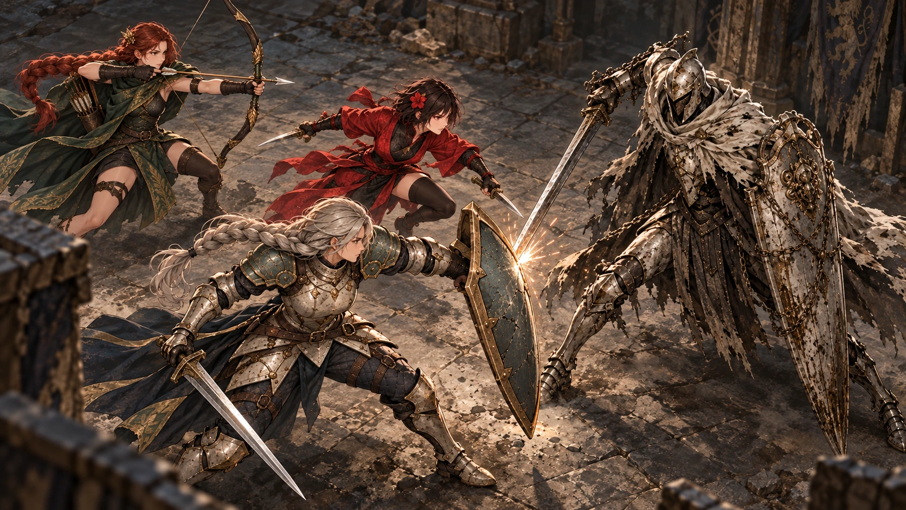
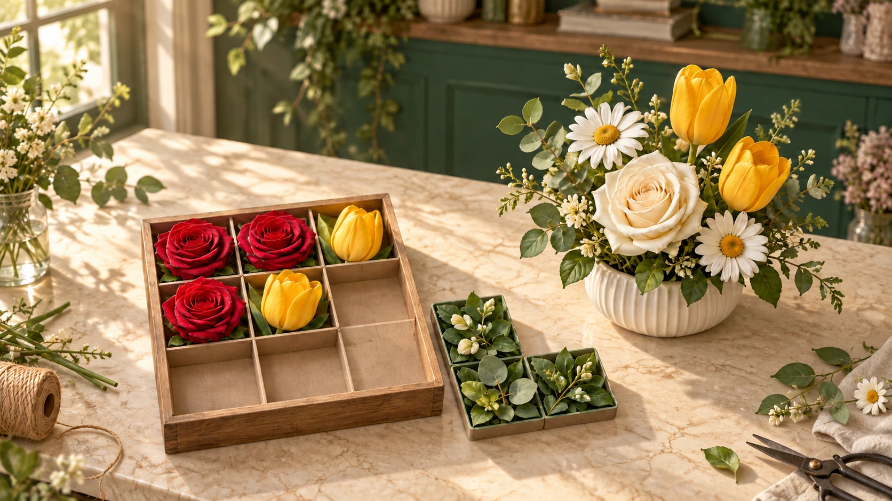
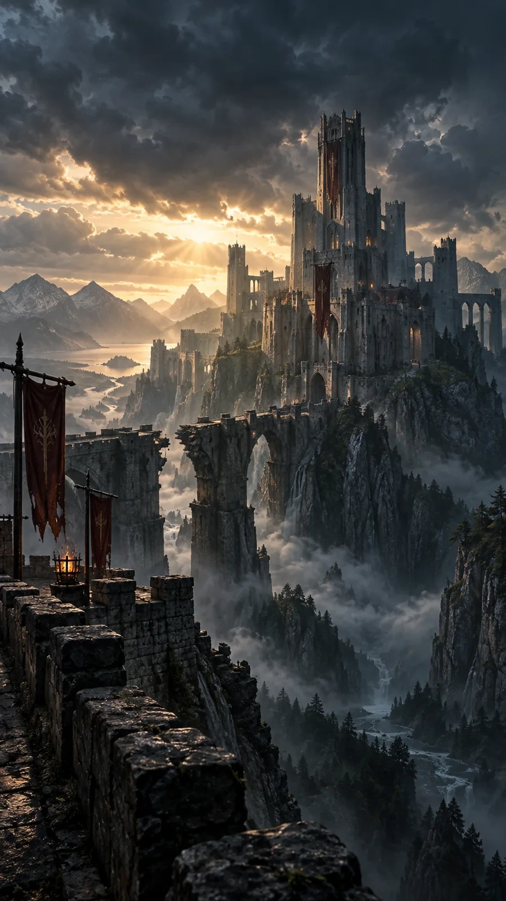
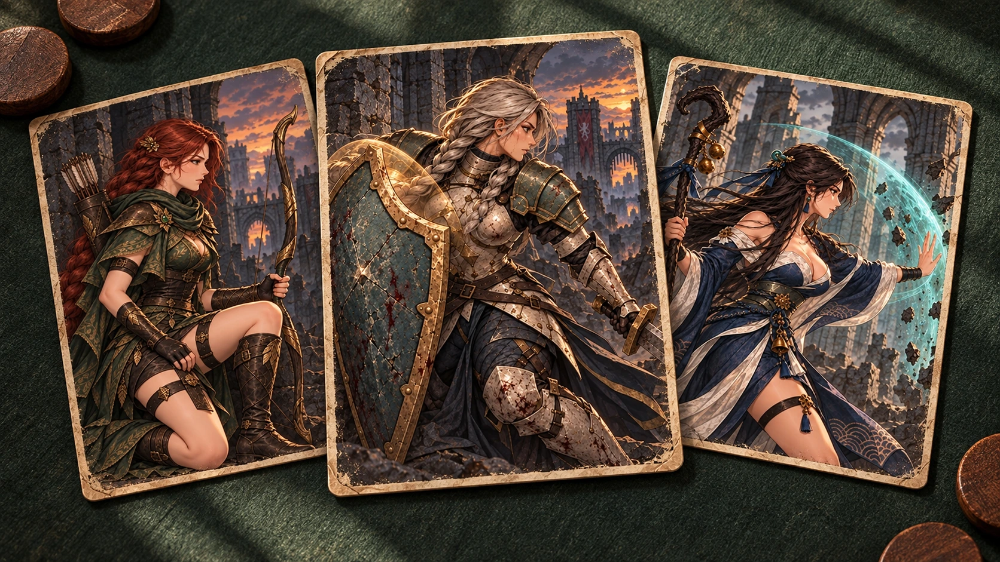
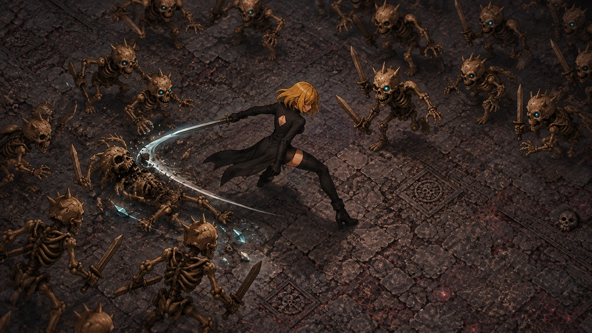

소울라이크 액션 RPG
브로큰 소울
적의 패턴을 읽고, 회피와 패링으로 빈틈을 만들어라. 한 번의 정확한 반격이 전세를 바꾸는 다크 판타지 액션.
작은 스튜디오, 서로 다른 세계
맞서는 순간의 긴장감, 한 수 앞을 읽는 즐거움, 꽃 한 송이의 여유. 각기 다른 재미를 만드는 1인 게임 스튜디오, Double J Labs입니다.
전체 게임01 / 우리의 게임
지금 즐길 수 있는 게임과 다음에 만나게 될 게임을 한곳에서 살펴보세요.
소울라이크 액션 RPG
적의 패턴을 읽고, 회피와 패링으로 빈틈을 만들어라. 한 번의 정확한 반격이 전세를 바꾸는 다크 판타지 액션.

사전등록실시간 반응형 SRPG
동료를 편성하고, 행동 순서와 AP를 설계하세요. 적의 공격에는 실시간 회피와 패링으로 응답하는 리액션 SRPG.

출시됨꽃꽂이 퍼즐 · 꾸미기
꽃의 자리와 모양을 맞추는 퍼즐, 완성한 작품을 모으고 내 취향으로 꾸미는 작은 꽃집

개발 중액션 디펜스 RPG
영웅을 직접 조작하고 수비대를 편성해 몰려오는 적을 막아내세요. 전투 중 카드 선택과 동료 조합으로 성채의 운명을 바꿉니다.
축구 선수 육성 · 스토리
한 명의 선수를 선택해 나만의 공격수로 키워보세요. 돌파·침투·원투의 결정적 순간을 설계하고, 훈련과 이야기로 성장합니다.
 개발 중
개발 중SF 편성 전략
드랍십에 병력을 싣고 전열과 지원 배치를 설계하세요. 역할과 상성을 조합하고, 전투 결과를 비교하며 편성을 완성합니다.

개발 중팀 전술 덱빌더
6인 부대와 카드 덱으로 거점 전투를 설계하세요. 이동, 대응, 카드의 연결을 읽고 적을 쓰러뜨리는 것 이상의 승리를 노립니다.

개발 중로그라이트 생존 액션
밀려오는 적과 보스 사이에서 생존하고 유산을 조합하세요. 짧은 사냥마다 다른 선택을 쌓아 자신만의 전투 방식을 완성합니다.
02 / 소식과 이벤트
BROKEN SOUL / 이벤트
브로큰 소울 플레이 영상을 SNS에 공유하고 77소울을 받으세요. Google Play·Steam 영상 모두 참여할 수 있습니다.
이벤트 자세히 보기BROKEN TACTICS / 사전등록
동료와 함께하는 전술, 적의 일격에 반응하는 전투. Google Play에서 사전등록하세요.
사전등록하기TODAY FLOWERS / 출시됨
꽃을 놓고, 주문을 완성하고, 나만의 꽃집을 꾸며보세요. Google Play에서 만나실 수 있습니다.
Google Play에서 보기기사와 인터뷰, 실제 플레이 영상을 모았습니다.
03 / DOUBLE J LABS
Double J Labs는 직접 플레이하고 싶은 게임을 만드는 1인 개발 스튜디오입니다. 액션과 전술, 스포츠와 퍼즐까지. 서로 다른 장르 속에서 작은 선택이 오래 남는 경험을 만들어 갑니다.
04 / 문의
출시·사전등록 게임의 오류, 결제, 저장 문의는 아래 게임별 Google 설문지로 접수해 주세요.
개발 중인 게임의 출시 일정과 참여 방법은 공식 홈페이지에서 안내합니다. 현재 공개 다운로드나 테스트 참가 신청은 제공하지 않습니다.
협업·사업 제안은 이메일로 보내주세요.
doublejlabs@gmail.com